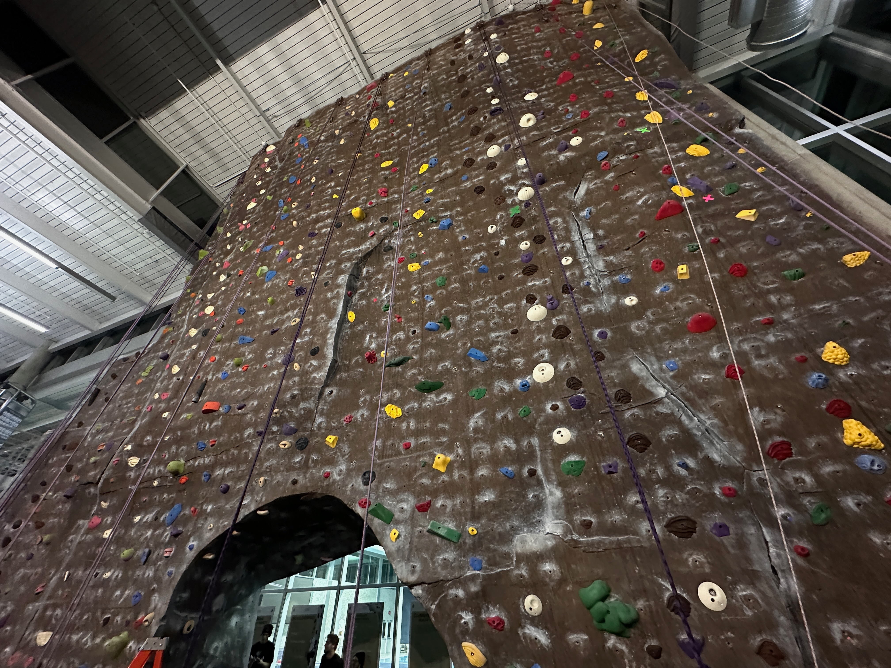

I work as a route setter and office specialist for the ISU Adventure Program. My responsibilities included setting up and maintaining the climbing wall, creating routes on both the top rope and boulder walls, as well as managing office tasks and coordinating events. I collaborate with a team of setters to ensure the climbing wall is safe and enjoyable for all climbers, and I also have the opportunity to interact with members of the climbing community and assist them with any questions or concerns they have about the wall or the routes.
This experience has allowed me to develop my skills in route setting, teamwork, and customer service while fostering a passion for climbing and outdoor recreation. I have enjoyed being a part of the ISU Adventure Program and contributing to the climbing community on campus.
